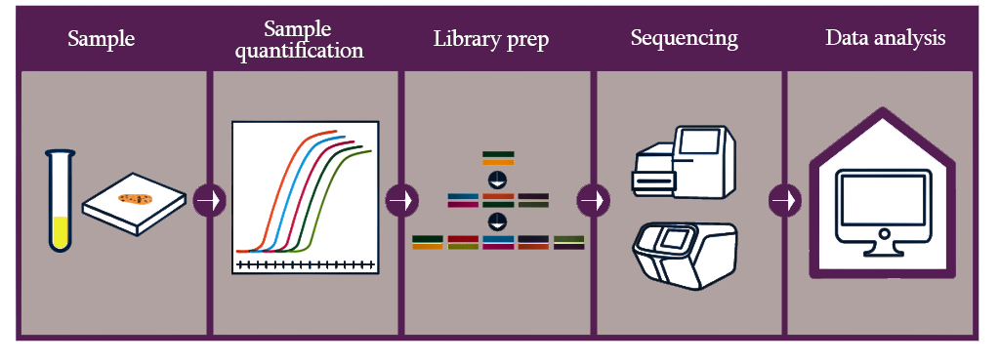

OXGEN® Molecular Solution offers
OXGEN® Molecular Solution offers amplicon-based next generation sequencing (NGS) for microbiome samples and the bioinformatics analysis of microbial communities. Service includes charachterisation and identification of Microbial communities within samples, such as envirormental, soil, food, feed etc. Samples for the sequencing can be provided from each individual step as un-extracted DNA, purified DNA or PCR products by customers
We provide Illumina Sequensincg service, to generate high quality data at cost-effective solutions. The data are analysed using OTU (operational taxonomic unit) analysis of both bacterial and fungal communities using bioinformatics tools such as QIIME. You will get project report containing main results: bacterial and fungal turnover from phylum to species level, Alpha diversity (measures for sample microbial community structure) indexes with rarefaction curves and Beta diversity (changes in microbiota composition between samples, groups or conditions) indexes with 2D and 3D PcoA plots. The report also includes information about statistically significant different taxons between samples or groups, phylogenetic tree and heatmap presenting different taxons between samples. Customers will also get report about each step of bioinformatic analysis from pre-processing of raw data end to visualisation of statistical information. Our staff keep you up to date and delivers the results as soon as they are prodced.